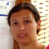

COS
126
Description. This course is an introduction to computer science in the context of scientific, engineering, and commercial applications. The goal of the course is to teach basic principles and practical issues, while at the same time preparing students to use computers effectively for applications in computer science, physics, biology, chemistry, engineering, and other disciplines. Topics include: programming in Java; hardware and software systems; algorithms and data structures; fundamental principles of computation; and scientific computing, including simulation, optimization, and data analysis.
Prerequisites. None.
Lectures. Lectures meet on Tuesdays and Thursdays from 10:00-10:50am in McCosh 10.
Precepts. Precepts meet twice a week on Tuesdays & Thursdays or Wednesdays & Fridays.
Readings. The first book is required the second book is optional. Available at Labyrinth Bookstore, 122 Nassau Street. Also on reserve at Friend library.

|
Required reading. R. Sedgewick and K. Wayne, Introduction to Programming in Java: An Interdisciplinary Approach, Addison-Wesley, 2007. ISBN 0-321-49805-4. We will be referencing this text all semester. The lectures are based on its contents. |

|
Suggested reading.D. Harel, Computers Ltd.: What They Really Can't Do, Oxford, 2003. ISBN 0-19-860442-4. This is an introduction to computer science theory that will assist you in the second half of the semester. |
Website.This website contains a wealth of resources for students to practice and study computer science, including archives of lecture slides, online programming activities with solutions, a Java visualizer, and the past five years of exams with solutions. This site can be found at the following address: http://www.princeton.edu/~cos126
Software.This course has an associated software package called introcs that enables students to write and test code. Students may install it on their own computer by following the instructions for their operating system, whether they are running Windows, Mac, or Linux.
Cluster computers.For students who may not have a computer or for students whose computers fail during the semester, we provide cluster machines in Friend Center 017 with the course software pre-installed. Click here for information on using the labs.

Weights & curve. The semester grades are composed of two two-part exams, worth a combined 50%, nine weekly programming assignments worth 40%, and one final programming project worth the remaining 10%. Grades are not curved. Expect the cutoff for an "A" to be approximately 93% of the available points, expect the cuttoff for an "A-" to be 90%, and so on.
Midterm exams. There are two two-part exams during the semester. One will be given in middle of the semester, and one in the last week of classes. Both exams consist of a written portion, worth 70% of the exam grade, and a programming portion, worth the remaining 30. There will be no final.
Programming assignments. There are nine weekly programming assignments weighted equally. They are due Monday nights.
Final project. The final project is a large programming assignment (approximately the size of two of the weekly assignments) due at the end of Reading Period.
Late submissions. All assignments are due at midnight. Submissions made at 12:01am will be marked late. If any part of an assignment is submitted late, the entire assignment will be marked late. Student have four free late days to use as they wish throughout the semester on the nine programming assignments. There are no partial late days. Students who submit late work, after they have used up all four free late days will lose 20% of the possible points on the late assignment per day or partial day late thereafter. Outside of this late day policy, the only late work that will be excused are for students in medical or personal distress as indicated by a letter from their Dean, Director of Studies, or from McCosh Health Center. We will not accept any work for this semester after Dean's Date.
Extra credit. Some of the assignments in this course feature optional extra credit sections intended for students who have completed every other part of the assignment first. In COS 126, extra credit points are only given a small discretionary value at the end of the term. Rather than adding the extra credit points to the total number of earned points in the semester, the course staff considers extra credit for students who end the semester close to a grade boundary, potentially pushing an "A-" to an "A" for example. Note that extra credit sections have stricter collaboration and late policies than the rest of the assignment. Extra credit may not be submitted late under any circumstances. Extra credit may not be discussed, even conceptually, with anyone other than course staff. Even then, course staff are only permitted to clarify the wording of an extra credit section, like we would on an exam. Course staff is explicitly not permitted to give students hints or tips on extra credit sections, nor look at extra credit code before grading it. Students working on a partnered assignment may do the extra credit section individually or together.
Regrading. To err is human. We may make a mistake while grading your work. To request a regrade, please write a short note describing the potential mistake atop the graded work and return it to your preceptor within two weeks of that work being handed back.
Auditing. Auditors must identify themselves to the lead preceptors via email as soon as possible. Auditors will receive only automated feedback on work (i.e. immediate feedback in the submission system, as well as an e-mailed copy of the testing performed on their submissions). To earn audit credit, you must: complete all of the programming assignments and the final project, using at most four late days. Auditors do not take exams.
| Your Partner | Course Staff | COS 126 Alums | Your Classmates | Other People | |
|---|---|---|---|---|---|
| Discuss concepts with: | Yes. | Yep. | Mhmm. | Definitely. | Sure. |
| Acknowledge collaboration with: | Please do. | By all means! | Indubitably. | My answer is yes. | Un-huh. |
| Expose your code/solutions to: | Feel free. | Indeed. | You may. | No. | No. |
| View code/solutions from: | Works for me. | No. | No. | No. | No. |
| Copy/plagiarize code from: | No. | No. | No. | No. | No. |
External sources. Students are not permitted to use any reference material containing code, including websites and online forums, not affiliated with this course. Students must acknowledge any and all help received on assignments in the readme.txt file submitted with each assignment. Students may not post questions about the course or about assignments on any website not affiliated with this course. Instead of looking at external materials, students are encouraged to post questions to Piazza.
Abetting plagiarism. Students must keep the work they produce for this course, including code, comments, readme files, and any other work product, absolutely private and confidential. Sharing work with any student, whether that student is in the course or not in the course, is considered abetting plagiarism -- a serious offense prosecuted by the Committe on Discipline. This policy applies regardless of the method of sharing: whether a student emails his/her work to another student, hands a physical copy of his/her work to another student, posts his/her work to a website or repository where another student can access it, or shares his/her password with another student. This policy applies to finished work as well as to unfinished work, graded and ungraded. This policy applies during the semester as well as after the semester. The course staff maintains an archive of all of work submitted to us in the last ten years. We can and do prosecute students who plagiarize from previous submissions. Students are encouraged to ask the course staff, ideally over Piazza, if they have any reason to be concerned that what they're doing constitutes plagiarism.
The course staff is here to help.
COS 126 is staffed by a mix of professors, lecturers, and graduate students. Below you will find our contact info, precept schedules, and office hours. Note, it is almost always more appropriate to post your question on Piazza rather than emailing it to any single staffmember. Also note that
| NAME | PRECEPT(S) | OFFICE HOURS | |
|---|---|---|---|
|
Robert Sedgewick rs@cs.princeton.edu Instructor |
L01 -- Lecture. Tuesdays & Thursdays 10:00-10:50am in McCosh 10 |
Tuesdays & Thursdays 11:00am-1:30pm in CS 319 |
|
|
Donna Gabai dgabai@cs.princeton.edu Co-Lead Preceptor |
P01 Tuesdays & Thursdays 12:30-1:20pm in Friend 108 |
P06A Wednesdays & Fridays 2:30-3:20pm in Friend 109 |
Sundays 7:00-9:00pm in Friend 017 |
|
Maia Ginsburg maia@cs.princeton.edu |
Co-Lead Preceptor P01A Tuesdays & Thursdays 12:30-1:20pm in Friend 109 |
P05A Wednesdays & Fridays 1:30-2:20pm in Friend 109 |
Thursdays 1:30-2:00pm Fridays 2:30-3:00pm Mondays 2:00-3:00pm in CS 205 |
|
Andrea LaPaugh aslp@cs.princeton.edu |
P01B Tuesdays & Thursdays 12:30-1:20pm in Friend 009 |
P02B Tuesdays & Thursdays 1:30-2:20pm in Friend 009 |
Thursdays 2:30-4:30pm in CS 304 |
|
Dan Leyzberg dan.leyzberg@princeton.edu |
P02 Tuesdays & Thursdays 12:30-1:20pm in Friend 009 |
P03 Tuesdays & Thursdays 1:30-2:20pm in Friend 009 |
Thursdays 2:00-4:00pm in CS 304 |
|
Stephen Cook stcook@princeton.edu |
P02A Tuesdays & Thursdays 1:30-2:20pm in Friend 109 |
Mondays 4:30-6:30pm in CS 001B |
|
|
Jordan Ash jordanta@cs.princeton.edu |
P02C Tuesdays & Thursdays 1:30-2:20pm in Friend 111 |
Mondays 1:00-3:00pm in CS 004 |
|
|
Shaoqing (Victor) Yang sy2@princeton.edu |
P03A Tuesdays & Thursdays 2:30-3:20pm in Friend 110 |
Wednesdays 1:00-3:00pm in 221 Nassau St., first floor |
|
|
Katie Edwards ke@princeton.edu |
P04 Tuesdays & Thursdays 7:30-8:20pm in Friend 108 |
Tuesdays 11:30am-12:30pm Thursdays 6:00-7:00pm in CS 244 |
|
|
Doug Clark doug@princeton.edu |
P05 Wednesdays & Fridays 1:30-2:20pm in Friend 108 |
P06 Wednesdays & Fridays 2:30-3:20pm in Friend 108 |
Fridays 3:30-5:30pm in CS 244 |
|
Ted Brundage tobrund@princeton.edu |
P05B Wednesdays & Fridays 2:30-3:20pm in Friend 110 |
Fridays 3:30-5:30pm in CS 244 |
|
|
Young Kun Ko yko@cs.princeton.edu |
Office hours only. |
Mondays 11:00am-1:00pm in CS 103A |
|
|
Nevin Li nhli@princeton.edu |
Office hours only. |
Mondays 3:00-5:00pm in 221 Nassau St., First Floor |
|
|
Colin Watson colinw@princeton.edu |
ISC-only Precept Thursdays 3:00-4:20pm in Icahn 200 |
ISC-only Office Hours Fridays 3:00-5:00pm in Moffet 430A |
|
|
 Emily Nelson emilysn@princeton.edu |
ISC-only Precept Fridays 3:00-4:20pm in Icahn 200 |
ISC-only Office Hours Thursdays 5:00-7:00pm in Icahn 132 |
|